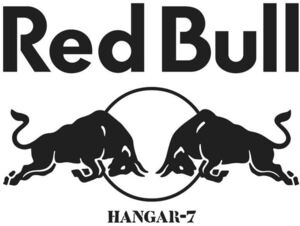

Trade Mark Journal No.2025/049 5 December 2025
WO0000001886365 (1,2,4,7,10,13,17,23,31,36,38,39,40,42,44,45)
Office of origin: European Union Intellectual Property Office (EUIPO)
Date of International Registration:7 July 2025
Date of designation in the UK:
7 July 2025

International priority date claimed: 4 February 2025
(European Union Intellectual Property Office (EUIPO))
(019138866)
- Class 1
- Chemicals used in industry; chemicals used in science; chemicals used in photography; chemicals used in agriculture; chemicals used in horticulture; chemicals used in forestry; unprocessed artificial resins; unprocessed plastics; manures; fire extinguishing compositions; tempering preparations; soldering preparations; chemical substances for preserving foodstuffs; tanning substances; adhesives used in industry; filtering media [chemical] for water; chemical preparations and materials for film, photography and printing; fertilisers; detergents for use in manufacture and industry; chemical substances, chemical materials and chemical preparations; salts for industrial purposes; starches for use in manufacturing and industry; putties, and fillers and pastes for use in industry; chemical and organic compositions for use in the manufacture of food and beverages; artificial sweeteners for the food industry; saccharin for the food industry; saccharin for industrial purposes; aspartame for industrial purposes; aspartame for the food industry; unprocessed artificial and synthetic resins.
- Class 2
- Paints; varnishes; lacquers; preservatives against rust; preservatives against deterioration of wood; colorants; mordants; raw natural resins; metals in foil form for use in painting, decorating, printing and art; metals in powder form for use in painting, decorating, printing and art; dyes, colorants, pigments and inks; food and beverage colorings; thinners and thickeners for coatings, dyes and inks; coatings.
- Class 4
- Industrial oils; industrial greases; lubricants; dust absorbing, wetting and binding compositions; fuels (including motor spirit); illuminants; candles and wicks for lighting; preserving oils; electrical energy; carburants.
- Class 7
- Machine tools; motors and engines, except for land vehicles; machine coupling and transmission components, except for land vehicles; agricultural implements other than hand-operated; incubators for eggs; automatic vending machines; agricultural, earthmoving, construction, oil and gas extraction and mining equipment; pumps and compressors as parts of machines, motors and engines, and blowing machines; industrial robots; electricity generators; moving and handling equipment; machines and machine tools for treatment of materials and for manufacturing; dispensing machines; sweeping, cleaning, washing and laundering machines; bottle filling machines; automatic tool changers for industrial robots; filling machines; construction machines; bulldozers; printing machines; labellers [machines]; sewing machines; trueing machines; cutters [machines]; welding machines.
- Class 10
- Surgical apparatus and instruments; medical apparatus and instruments; dental apparatus and instruments; veterinary apparatus and instruments; artificial limbs; artificial eyes; artificial teeth; orthopedic articles; suture materials; therapeutic and assistive devices adapted for persons with disabilities; massage apparatus; apparatus, devices and articles for nursing infants; sexual activity apparatus, devices and articles; physical therapy equipment; hearing protection devices; medical furniture and bedding, equipment for moving patients; clothing other than uniforms, headgear and footwear for medical purposes for medical personnel and patients; prosthetics and artificial implants; mobility aids; infants' pacifiers; support bandages; athletic tapes.
- Class 13
- Firearms; ammunition and projectiles; explosives; fireworks; explosive substances and devices, other than arms.
- Class 17
- Unprocessed and semi-processed rubber; unprocessed and semi-processed guttapercha; unprocessed and semi-processed gum; unprocessed and semi-processed asbestos; unprocessed and semi-processed mica; substitutes for unprocessed and semi-processed rubber; substitutes for unprocessed and semi-processed gutta-percha; substitutes for unprocessed and semi-processed gum; substitutes for unprocessed and semi-processed asbestos; substitutes for unprocessed and semi-processed mica; plastics in extruded form for use in manufacture; packing materials; stopping materials; insulating materials; flexible pipes, not of metal; flexible pipes, tubes, hoses, and fittings therefor, including valves, nonmetallic; seals, sealants and fillers; insulation and barrier articles and materials; rubber material for recapping tires; shock-absorbing and packing materials, vibration dampers; filtering materials of semi-processed foams of plastic; adhesive tapes, strips, bands and films; clutch linings and partly processed brake lining materials.
- Class 23
- Yarns and threads for textile use.
- Class 31
- Raw and unprocessed agricultural products; agricultural and aquacultural crops, horticulture and forestry products; live animals, organisms for breeding other than for scientific, medical or veterinary purposes; fresh fruits; fresh vegetables; natural plants; natural flowers; foodstuffs for animals; malt; raw and unprocessed grains; raw and unprocessed seeds; foodstuffs and fodder for animals; bedding and litter for animals; cannabis plants; cannabis, unprocessed.
- Class 36
- Financial, monetary and banking services; insurance services; real estate services; insurance underwriting and appraisals and assessment for insurance purposes; warranty services; pawnbrokerage; issuance of prepaid cards and tokens of value; safe deposit services; investment services; fundraising and sponsorship; valuation services; issue and redemption of tokens of value; issuing of tokens of value in relation to customer loyalty schemes; issuing of tokens of value in relation to incentive schemes; issuing tokens of value as a reward for customer loyalty; issuing of tokens of value in the nature of vouchers for meals, travel vouchers, cash vouchers and gift vouchers; electronic transfer of cryptocurrency; financial exchange of crypto assets; financial services relating to digital currency, virtual currency, cryptocurrency, digital and blockchain asset, digitized asset, digital token, crypto token and utility token processing services for others.
- Class 38
- Telecommunications services; broadcasting services; communications by computer and providing access to the internet; provision and rental of telecommunications facilities and equipment; streaming of data; video-on-demand transmission; electronic bulletin board services [telecommunications services]; providing chatrooms in virtual environments.
- Class 39
- Transport; travel arrangement; packaging and storage of goods; distribution by pipeline and cable; navigation services; transportation and delivery of goods; rental of means of transportation; travel and passenger transportation; rescue, recovery, towing and salvage; parking and vehicle storage, mooring.
- Class 40
- Recycling of waste and trash; air purification; water treatment; printing services; food and drink preservation; textile, leather and fur treatment; energy production; printing, and photographic and cinematographic development; duplication of audio and video recordings; slaughtering of animals; food and beverage treatment; beer brewing for others.
- Class 42
- Scientific and technological services and research and design relating thereto; industrial analysis, industrial research and industrial design services; design and development of computer hardware and software; IT services; medical and pharmacological research services; engineering services; architectural and urban planning services; natural science services; testing, authentication and quality control; design services; maintenance of computer software; providing online non-downloadable computer software.
- Class 44
- Medical services; veterinary services; hygienic and beauty care for human beings; hygienic and beauty care for animals; agriculture, aquaculture, horticulture and forestry services; animal grooming services; human healthcare services; dentistry; pharmaceutical services; opticians' services; mental health services; cosmetic treatment services for the body; rental of spectacles; dietary and nutritional advice.
- Class 45
- Legal services; security services for the physical protection of tangible property and individuals; dating services; online social networking services; funerary services; safety, security and enforcement services for the safety and protection of property and individuals; astrological and spiritual services; rental of clothing; detective services; religious services; dating services provided through social networking; political lobbying services.
Red Bull GmbH